Show code cell source
import numpy as np
import matplotlib.pyplot as plt
%matplotlib inline
import matplotlib_inline
matplotlib_inline.backend_inline.set_matplotlib_formats('svg')
import seaborn as sns
sns.set_context("paper")
sns.set_style("ticks")
from matplotlib.patches import Ellipse
def plot_ellipse(
mu,
cov,
ax,
std=2.0,
edgecolor='red'
):
"""Plot an ellipse.
Arguments:
mu -- The center of the ellipse.
cov -- A covariance matrix. We find its principal
axes to draw the ellipse.
ax -- An axes object to draw on.
Keyword Arguments
edgecolor -- The color we use.
"""
a = cov[0, 0]
b = cov[0, 1]
c = cov[1, 1]
lam1 = (
0.5 * (a + c)
+ np.sqrt((0.5 * (a - c)) ** 2 + b ** 2)
)
lam2 = (
0.5 * (a + c)
- np.sqrt((0.5 * (a - c)) ** 2 + b ** 2)
)
if b == 0.0 and a >= c:
theta = 0.0
elif b == 0 and a < c:
theta = 0.5 * np.pi
else:
theta = np.arctan2(lam1 - a, b)
angle = 0.5 * 360.0 * theta / np.pi
ell_radius_x = np.sqrt(lam1)
ell_radius_y = np.sqrt(lam2)
obj = Ellipse(
mu,
width=ell_radius_x * std,
height=ell_radius_y * std,
angle=angle,
facecolor='none',
edgecolor=edgecolor
)
ax.add_patch(obj)
Kalman Filter for the Object Tracking Example#
Let’s bring back the code from the Object Tracking Example. We do not repeat the theoretical details.
# The timestep
Dt = 0.5
# The mass
m = 1.0
# The variance for the process noise for position
epsilon = 1e-6
# The standard deviation for the process noise for velocity
sigma_q = 1e-2
# The standard deviation for the measurement noise for position
sigma_r = 0.05
# INITIAL CONDITIONS
# initial mean
mu0 = np.zeros((4,))
# initial covariance
V0 = np.array([0.1**2, 0.1**2, 0.1**2, 0.1**2]) * np.eye(4)
# TRANSITION MATRIX
A = np.array(
[
[1.0, 0, Dt, 0],
[0.0, 1.0, 0.0, Dt],
[0.0, 0.0, 1.0, 0.0],
[0.0, 0.0, 0.0, 1.0]
]
)
# CONTROL MATRIX
B = np.array(
[
[0.0, 0.0],
[0.0, 0.0],
[Dt / m, 0.0],
[0.0, Dt / m]
]
)
# PROCESS COVARIANCE
Q = (
np.array(
[epsilon, epsilon, sigma_q ** 2, sigma_q ** 2]
)
* np.eye(4)
)
# EMISSION MATRIX
C = np.array(
[
[1.0, 0.0, 0.0, 0.0],
[0.0, 1.0, 0.0, 0.0]
]
)
# MEASUREMENT COVARIANCE
R = (
np.array(
[sigma_r ** 2, sigma_r ** 2]
)
* np.eye(2)
)
Generate a trajectory and observations:
np.random.seed(12345)
# The number of steps in the trajectory
num_steps = 50
# Space to store the trajectory (each state is 4-dimensional)
true_trajectory = np.ndarray((num_steps + 1, 4))
# Space to store the observations (each observation is 2-dimensional)
observations = np.ndarray((num_steps, 2))
# Sample the initial conditions
x0 = mu0 + np.sqrt(np.diag(V0)) * np.random.randn(4)
true_trajectory[0] = x0
# Pick a set of pre-determined forces to be applied to the object
# so that it does something interesting
force = .01
omega = 2.0 * np.pi / 5
times = Dt * np.arange(num_steps + 1)
us = np.zeros((num_steps, 2))
us[:, 0] = force * np.cos(omega * times[1:])
us[:, 1] = force * np.sin(omega * times[1:])
# Sample the trajectory
for n in range(num_steps):
x = (
A @ true_trajectory[n]
+ B @ us[n]
+ np.sqrt(np.diag(Q)) * np.random.randn(4)
)
true_trajectory[n+1] = x
y = (
C @ x
+ np.sqrt(np.diag(R)) * np.random.randn(2)
)
observations[n] = y
We are not going to implement the filter from scratch. We will use the Python module FilterPy. This is not included in the default version of Google Colab. You need to install it manually. Here is how:
!pip install filterpy
Show code cell output
DEPRECATION: Loading egg at /opt/homebrew/lib/python3.11/site-packages/ipython_tikzmagic-0.1.1-py3.11.egg is deprecated. pip 23.3 will enforce this behaviour change. A possible replacement is to use pip for package installation..
Requirement already satisfied: filterpy in /opt/homebrew/lib/python3.11/site-packages (1.4.5)
Requirement already satisfied: numpy in /opt/homebrew/lib/python3.11/site-packages (from filterpy) (1.24.3)
Requirement already satisfied: scipy in /opt/homebrew/lib/python3.11/site-packages (from filterpy) (1.10.1)
Requirement already satisfied: matplotlib in /opt/homebrew/lib/python3.11/site-packages (from filterpy) (3.7.1)
Requirement already satisfied: contourpy>=1.0.1 in /opt/homebrew/lib/python3.11/site-packages (from matplotlib->filterpy) (1.0.7)
Requirement already satisfied: cycler>=0.10 in /opt/homebrew/lib/python3.11/site-packages (from matplotlib->filterpy) (0.11.0)
Requirement already satisfied: fonttools>=4.22.0 in /opt/homebrew/lib/python3.11/site-packages (from matplotlib->filterpy) (4.39.4)
Requirement already satisfied: kiwisolver>=1.0.1 in /opt/homebrew/lib/python3.11/site-packages (from matplotlib->filterpy) (1.4.4)
Requirement already satisfied: packaging>=20.0 in /opt/homebrew/lib/python3.11/site-packages (from matplotlib->filterpy) (23.1)
Requirement already satisfied: pillow>=6.2.0 in /opt/homebrew/lib/python3.11/site-packages (from matplotlib->filterpy) (9.5.0)
Requirement already satisfied: pyparsing>=2.3.1 in /opt/homebrew/lib/python3.11/site-packages (from matplotlib->filterpy) (3.0.9)
Requirement already satisfied: python-dateutil>=2.7 in /opt/homebrew/lib/python3.11/site-packages (from matplotlib->filterpy) (2.8.2)
Requirement already satisfied: six>=1.5 in /opt/homebrew/lib/python3.11/site-packages (from python-dateutil>=2.7->matplotlib->filterpy) (1.16.0)
Now you should be able to load the library. Try the code below:
from filterpy.kalman import KalmanFilter
To define the filter in FilterPy we need to give the dimensionality of the state space (dim_x) and the observations (dim_z).
Here is how:
kf = KalmanFilter(dim_x=4, dim_z=2)
Now we need to make the filter aware of the various vectors and matrices specifing initial conditions, transitions, emissions, covariances, etc.
Note that FilterPy different notation than the one we use.
The correspondance of the notation is as follows:
Name |
This class |
|
|---|---|---|
initial mean vector |
\(\mu_t\) |
\(x\) |
initial covariance matrix |
\(V_t\) |
\(P\) |
state transition matrix |
\(A\) |
\(F\) |
control matrix |
\(B\) |
\(B\) |
process covariance matrix |
\(Q\) |
\(Q\) |
emission matrix |
\(C\) |
\(H\) |
measurement covariance matrix |
\(R\) |
\(R\) |
This is how you can make the kf object aware of the various matrices:
kf.x = mu0
kf.P = V0
kf.Q = Q
kf.R = R
kf.H = C
kf.F = A
kf.B = B
Here is a bit of code for plotting (skip and return later if you want to understand how it works).
Show code cell source
def plot_mean_and_ellipse(
mu,
cov,
ax,
style=".",
color="green",
label="",
**kwargs
):
"""Plot mean and ellipse.
Argumets
mu -- The mean.
cov -- The covariance.
ax -- The axes object to plot on.
"""
ax.plot(
mu[0],
mu[1],
style,
color=color,
label=label
)
plot_ellipse(
mu,
cov,
ax,
edgecolor=color,
**kwargs
)
def plot_after_prediction_step(
kf,
true_trajectory=None,
observations=None
):
"""Plot summary right after prediction step.
Arguments
kf -- A Kalman filter object.
Keyword Arguments
true_trajector -- Plot the true trajectory if provided.
observations -- Plot the observations if provided.
Returns an axes object.
"""
fig, ax = plt.subplots()
if true_trajectory is not None:
ax.plot(
true_trajectory[:n+1, 0],
true_trajectory[:n+1, 1],
'md-',
label='True trajectory'
)
if observations is not None:
ax.plot(
observations[n,0],
observations[n,1],
'x',
label='Observation'
)
plot_mean_and_ellipse(
kf.x,
kf.P,
ax,
style=".",
color="green",
label="After prediction step."
)
return ax
Now we can do filtering. You can do one time step at a time. This is what you would do if the data points were coming one by one: Here is how:
# DO NOT RERUN THIS WITHOUT RERUNNING THE INITIALIZATION CODE IN THE PREVIOUS
# CODE BLOCK
for n in range(1, num_steps):
# Predict step (notice that you also need to pass the control (if there is any))
kf.predict(u=us[n])
# Make a figure one every few time steps
if n % 1 == 0:
ax = plot_after_prediction_step(
kf,
true_trajectory=true_trajectory,
observations=observations
)
# Update step
kf.update(observations[n])
if n % 1 == 0:
plot_mean_and_ellipse(
kf.x,
kf.P,
ax,
style="d",
color="red",
label="After observation step."
)
ax.set_xlim(-3.0, 0.5)
plt.legend(loc='best', frameon=False)
sns.despine(trim=True)
Show code cell output
/var/folders/5y/28n32xmx0551k29hd21qs87c0000gp/T/ipykernel_25747/1013963138.py:48: RuntimeWarning: More than 20 figures have been opened. Figures created through the pyplot interface (`matplotlib.pyplot.figure`) are retained until explicitly closed and may consume too much memory. (To control this warning, see the rcParam `figure.max_open_warning`). Consider using `matplotlib.pyplot.close()`.
fig, ax = plt.subplots()
 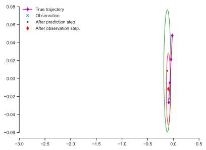
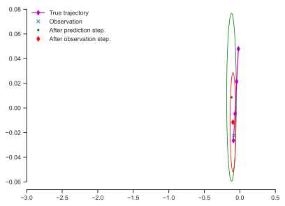 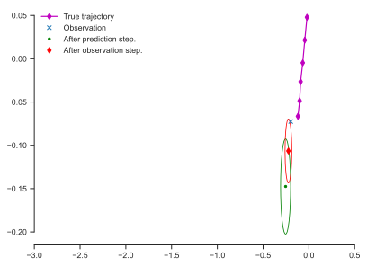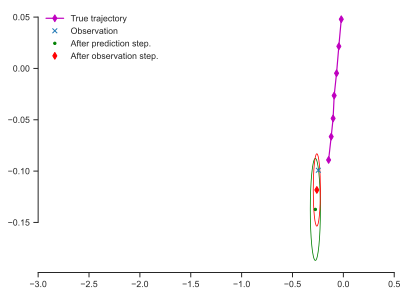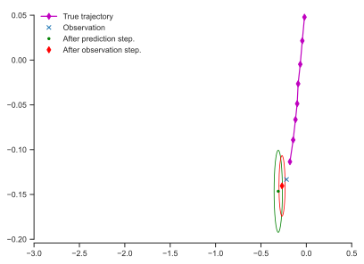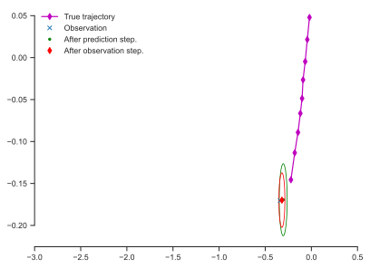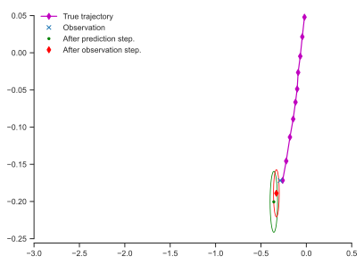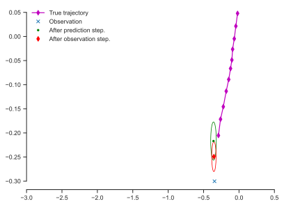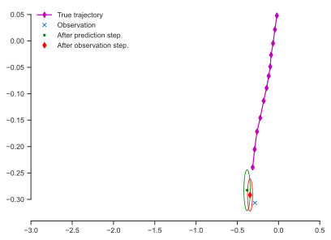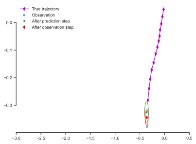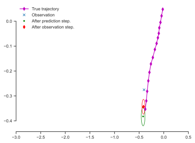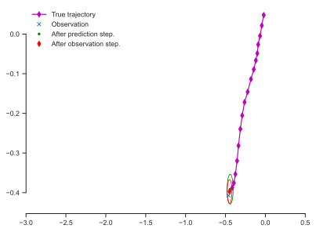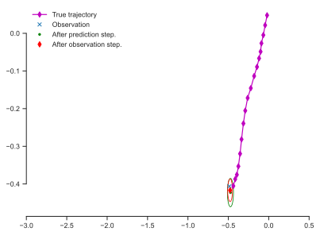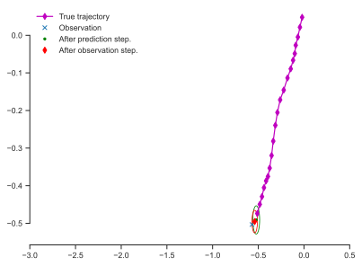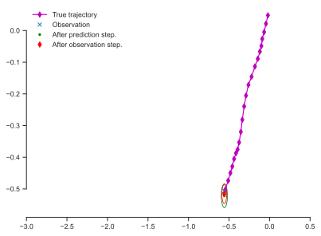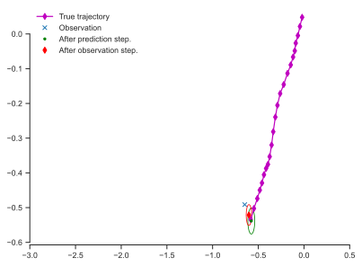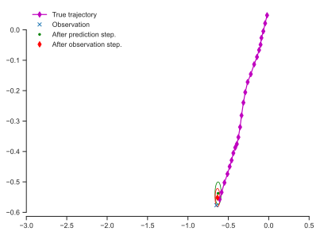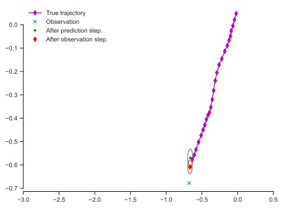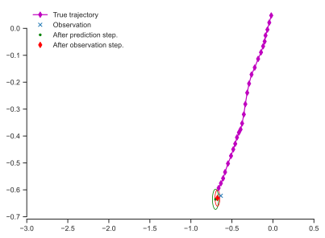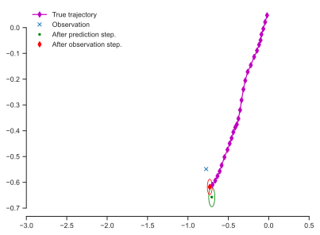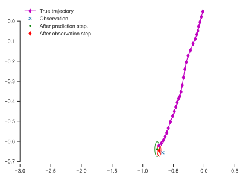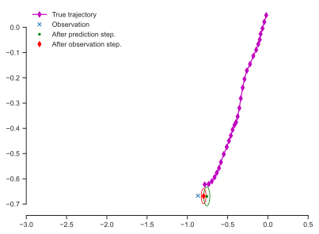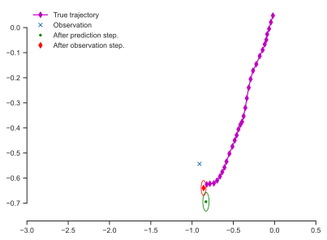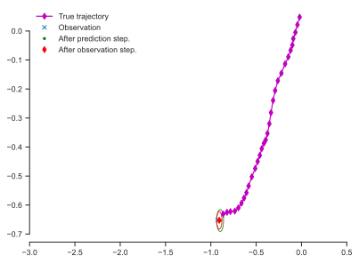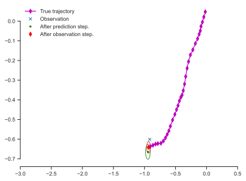
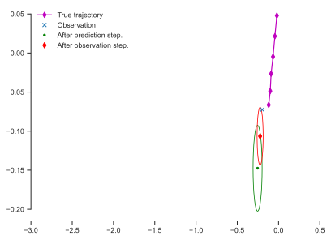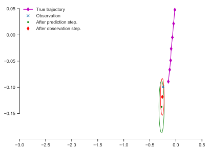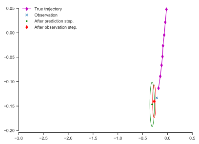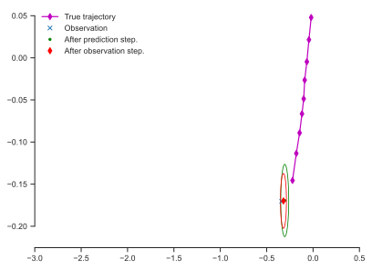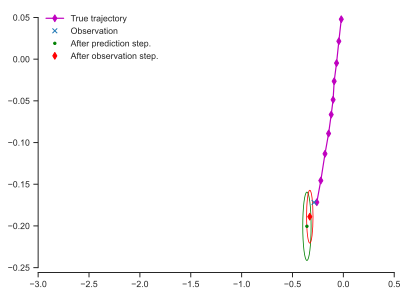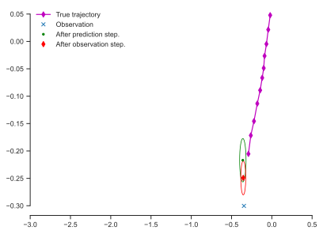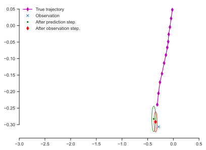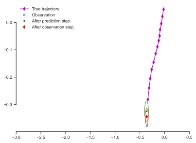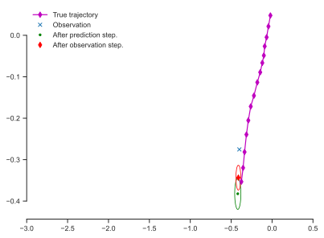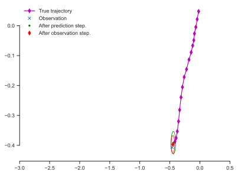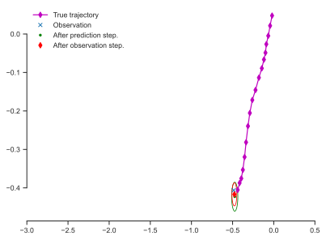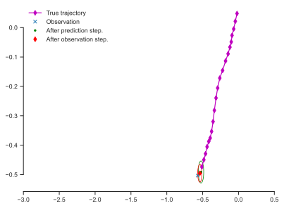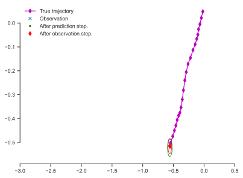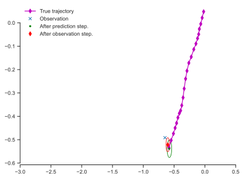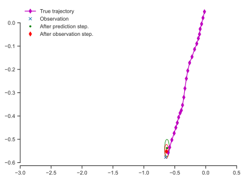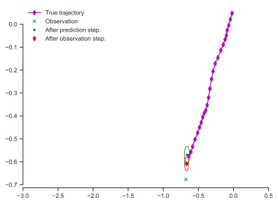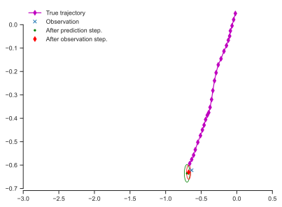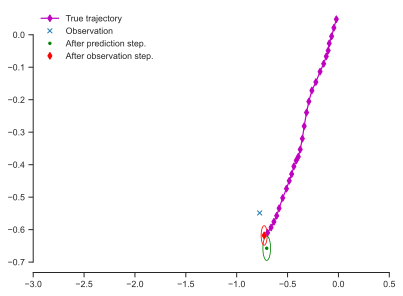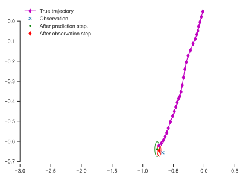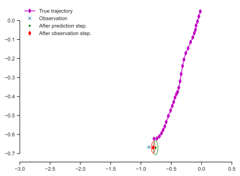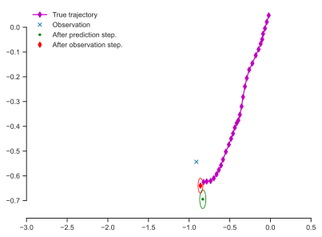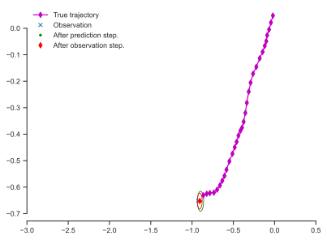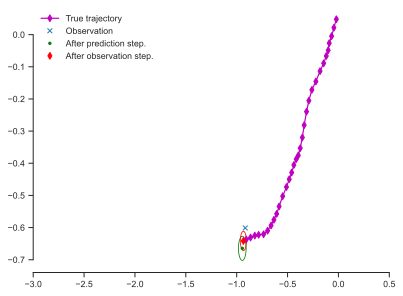 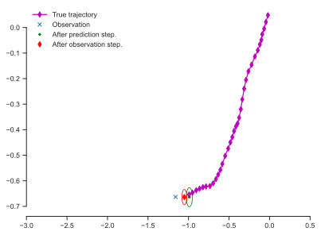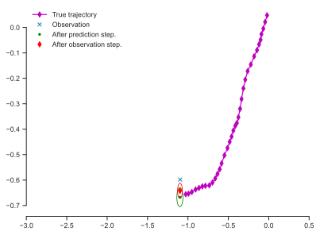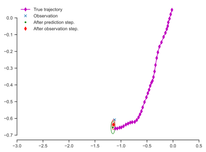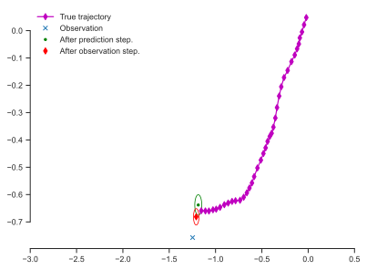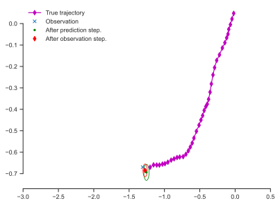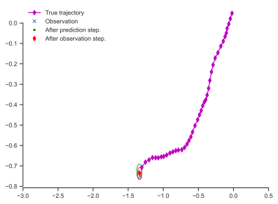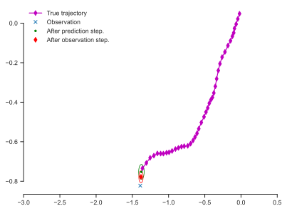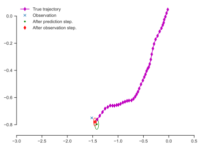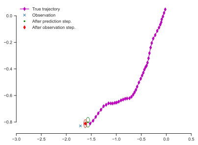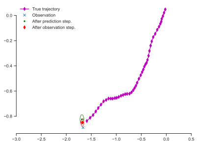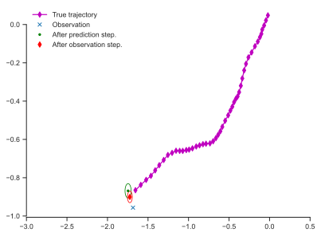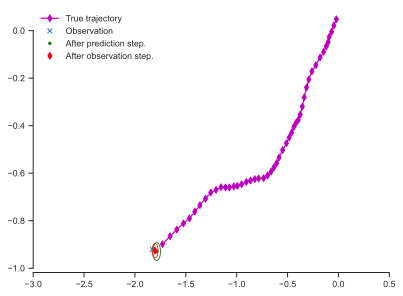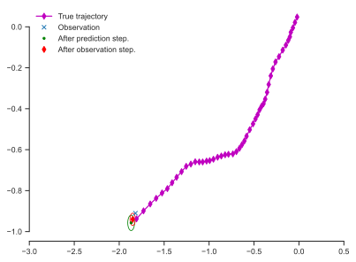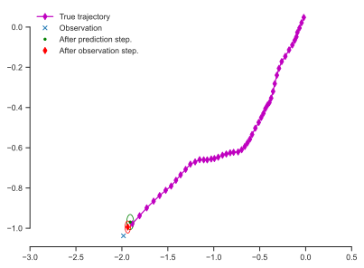
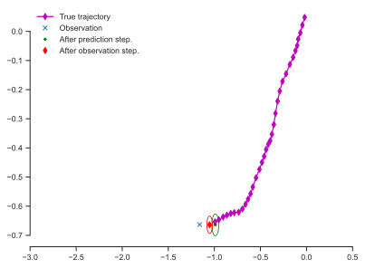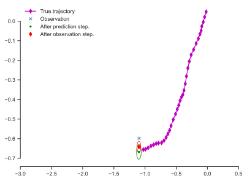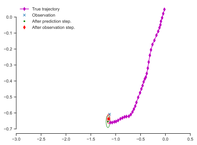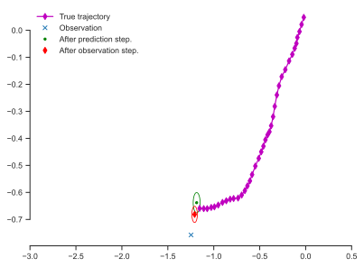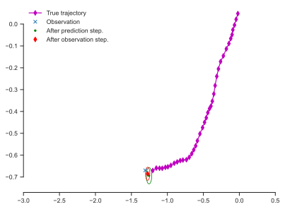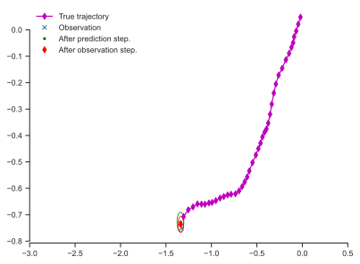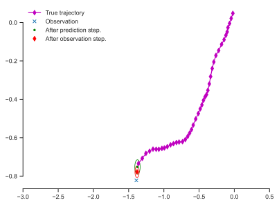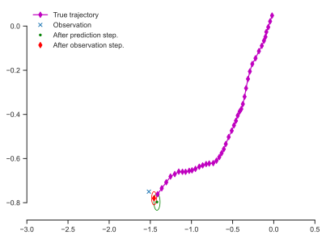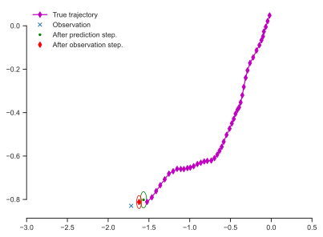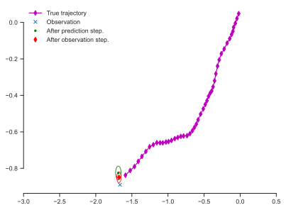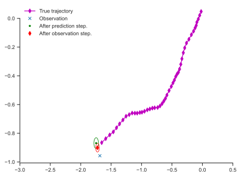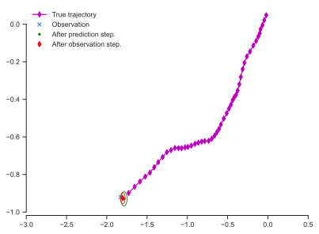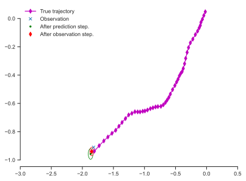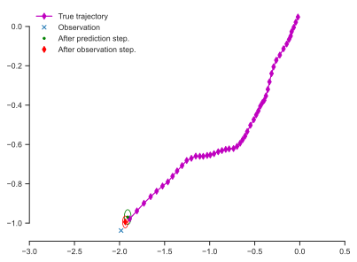Notice that the filter is very uncertain at the beginning. Then it gradually becomes better and better.
The other way to run the filter is with all the data at once. This is called a batch filter. Here is how:
# We need to reset the initial conditions
kf.x = mu0
kf.P = V0
# Here is the code that runs the batch:
means, covs, _, _ = kf.batch_filter(observations, us=us)
This returns the means and the covariances that you would have gotten at each timestep:
means
Show code cell output
array([[ 1.80147158e-02, 8.11943856e-02, 7.60981840e-03,
3.27690489e-02],
[ 4.41973566e-02, 9.00882506e-02, 2.27553942e-02,
2.82265091e-02],
[-4.68728614e-02, 6.01727972e-02, -4.62915860e-02,
-9.05656624e-04],
[-7.32854461e-02, 2.72678664e-02, -4.86447029e-02,
-1.99691167e-02],
[-2.19963488e-01, -1.15260459e-01, -1.12782638e-01,
-8.89059319e-02],
[-2.67315512e-01, -1.25471688e-01, -1.09042871e-01,
-7.35008994e-02],
[-3.17534660e-01, -1.43226698e-01, -1.07426705e-01,
-6.61585561e-02],
[-3.11092316e-01, -1.68087763e-01, -8.46056134e-02,
-6.35374732e-02],
[-3.72063839e-01, -2.01310472e-01, -9.07661506e-02,
-6.43426703e-02],
[-3.70164040e-01, -2.13473590e-01, -7.44695385e-02,
-5.76581770e-02],
[-3.94810150e-01, -2.90676331e-01, -7.00064827e-02,
-7.29598100e-02],
[-3.68384456e-01, -3.39448819e-01, -5.04907398e-02,
-7.63586706e-02],
[-3.78626947e-01, -4.06179683e-01, -4.59757411e-02,
-8.47695417e-02],
[-4.21246918e-01, -4.09775610e-01, -5.24576604e-02,
-7.24679811e-02],
[-4.34345597e-01, -3.84430535e-01, -4.88961259e-02,
-5.34198006e-02],
[-4.28259920e-01, -4.16573467e-01, -3.98383498e-02,
-5.53973683e-02],
[-4.55514219e-01, -4.52285246e-01, -4.22726976e-02,
-5.83634569e-02],
[-4.82018145e-01, -4.73175088e-01, -4.37916890e-02,
-5.62537454e-02],
[-4.86802344e-01, -5.11372364e-01, -3.80374969e-02,
-5.96959895e-02],
[-4.91411886e-01, -5.22619205e-01, -3.30230490e-02,
-5.38681923e-02],
[-5.23979909e-01, -5.56035292e-01, -3.76566684e-02,
-5.56081862e-02],
[-5.35693246e-01, -5.74442367e-01, -3.52675299e-02,
-5.21813065e-02],
[-5.85383461e-01, -5.73013875e-01, -4.54953126e-02,
-4.30582863e-02],
[-6.18117083e-01, -6.11556998e-01, -4.90384297e-02,
-4.81119207e-02],
[-6.51692383e-01, -6.93287229e-01, -5.23848289e-02,
-6.62393992e-02],
[-6.44669642e-01, -7.26823752e-01, -4.23504496e-02,
-6.66642915e-02],
[-6.99718248e-01, -7.10042431e-01, -5.31493388e-02,
-5.13921499e-02],
[-6.74116670e-01, -7.51294262e-01, -3.66011359e-02,
-5.67552721e-02],
[-7.44020239e-01, -7.88652607e-01, -5.24083281e-02,
-5.98705622e-02],
[-8.11663902e-01, -7.48120692e-01, -6.49258716e-02,
-3.77344403e-02],
[-8.62332516e-01, -7.67751159e-01, -7.02400199e-02,
-3.76802940e-02],
[-8.83891091e-01, -7.52409995e-01, -6.58258450e-02,
-2.64683666e-02],
[-8.98937943e-01, -7.80118370e-01, -6.03687152e-02,
-3.05391056e-02],
[-1.02029162e+00, -7.92620707e-01, -8.94087760e-02,
-2.93760525e-02],
[-1.07262924e+00, -7.66541662e-01, -9.23063118e-02,
-1.65714496e-02],
[-1.07379436e+00, -7.85355253e-01, -7.85803946e-02,
-2.01720711e-02],
[-1.09801537e+00, -7.66951370e-01, -7.40017520e-02,
-1.16990667e-02],
[-1.16723018e+00, -8.29533736e-01, -8.39655279e-02,
-2.99941778e-02],
[-1.23879683e+00, -8.31374014e-01, -9.28532589e-02,
-2.61555422e-02],
[-1.25315838e+00, -8.62286880e-01, -8.22816432e-02,
-3.17575313e-02],
[-1.28281025e+00, -8.85816057e-01, -7.82684526e-02,
-3.38666330e-02],
[-1.32314082e+00, -9.35321534e-01, -7.84897169e-02,
-4.36220378e-02],
[-1.40798943e+00, -9.28847183e-01, -9.29684007e-02,
-3.42620517e-02],
[-1.46982712e+00, -9.36724681e-01, -9.81954563e-02,
-3.10616176e-02],
[-1.59691970e+00, -9.59054963e-01, -1.23193712e-01,
-3.31973384e-02],
[-1.65148982e+00, -1.00327922e+00, -1.21391114e-01,
-4.21684525e-02],
[-1.68045283e+00, -1.06728351e+00, -1.11578404e-01,
-5.61252079e-02],
[-1.75386603e+00, -1.08980164e+00, -1.16959608e-01,
-5.48592130e-02],
[-1.78134189e+00, -1.08973292e+00, -1.06816740e-01,
-4.65158621e-02],
[-1.86483720e+00, -1.14423266e+00, -1.15767066e-01,
-5.63289340e-02]])
And here is an alternative way to visualize your uncertainty about the state at all times:
Show code cell source
def plot_kf_estimates(means, covs):
"""Plot estimates of the state with 95% credible intervals."""
y_labels = ['$x_1$', '$x_2$', '$x_3$', '$x_4$']
dpi = 150
res_x = 1024
res_y = 768
w_in = res_x / dpi
h_in = res_y / dpi
fig, ax = plt.subplots(4, 1)
fig.set_size_inches(w_in, h_in)
times = Dt * np.arange(num_steps + 1)
for j in range(4):
ax[j].set_ylabel(y_labels[j])
ax[-1].set_xlabel('$t$ (time)')
for j in range(4):
ax[j].plot(
times[0:num_steps],
true_trajectory[0:num_steps, j],
'b.-'
)
ax[j].plot(
times[1:num_steps],
means[1:num_steps, j],
'r.'
)
ax[j].fill_between(
times[1:num_steps],
(
means[1:num_steps, j]
- 2.0 * np.sqrt(covs[1:num_steps, j, j])
),
(
means[1:num_steps, j]
+ 2.0 * np.sqrt(covs[1:num_steps, j, j])
),
color='red',
alpha=0.25
)
if j < 2:
ax[j].plot(
times[1:num_steps],
observations[:n, j],
'go'
)
Here is how to use it:
plot_kf_estimates(means, covs)
Questions#
Rerun the code a couple of times to observe different trajectories.
Double the process noise variance \(\sigma_q^2\). What happens?
Double the measurement noise variance \(\sigma_r^2\). What happens?
Zero-out the control vector \(\mathbf{u}_{0:n-1}\). What happens?
Smoothing#
Let’s finish with some smoothing.
x, P, K, Pp = kf.rts_smoother(means, covs)
plot_kf_estimates(x, P)
help(kf.rts_smoother)
Help on method rts_smoother in module filterpy.kalman.kalman_filter:
rts_smoother(Xs, Ps, Fs=None, Qs=None, inv=<function inv at 0x11043a0c0>) method of filterpy.kalman.kalman_filter.KalmanFilter instance
Runs the Rauch-Tung-Striebal Kalman smoother on a set of
means and covariances computed by a Kalman filter. The usual input
would come from the output of `KalmanFilter.batch_filter()`.
Parameters
----------
Xs : numpy.array
array of the means (state variable x) of the output of a Kalman
filter.
Ps : numpy.array
array of the covariances of the output of a kalman filter.
Fs : list-like collection of numpy.array, optional
State transition matrix of the Kalman filter at each time step.
Optional, if not provided the filter's self.F will be used
Qs : list-like collection of numpy.array, optional
Process noise of the Kalman filter at each time step. Optional,
if not provided the filter's self.Q will be used
inv : function, default numpy.linalg.inv
If you prefer another inverse function, such as the Moore-Penrose
pseudo inverse, set it to that instead: kf.inv = np.linalg.pinv
Returns
-------
x : numpy.ndarray
smoothed means
P : numpy.ndarray
smoothed state covariances
K : numpy.ndarray
smoother gain at each step
Pp : numpy.ndarray
Predicted state covariances
Examples
--------
.. code-block:: Python
zs = [t + random.randn()*4 for t in range (40)]
(mu, cov, _, _) = kalman.batch_filter(zs)
(x, P, K, Pp) = rts_smoother(mu, cov, kf.F, kf.Q)
help(kf.batch_filter)
Help on method batch_filter in module filterpy.kalman.kalman_filter:
batch_filter(zs, Fs=None, Qs=None, Hs=None, Rs=None, Bs=None, us=None, update_first=False, saver=None) method of filterpy.kalman.kalman_filter.KalmanFilter instance
Batch processes a sequences of measurements.
Parameters
----------
zs : list-like
list of measurements at each time step `self.dt`. Missing
measurements must be represented by `None`.
Fs : None, list-like, default=None
optional value or list of values to use for the state transition
matrix F.
If Fs is None then self.F is used for all epochs.
Otherwise it must contain a list-like list of F's, one for
each epoch. This allows you to have varying F per epoch.
Qs : None, np.array or list-like, default=None
optional value or list of values to use for the process error
covariance Q.
If Qs is None then self.Q is used for all epochs.
Otherwise it must contain a list-like list of Q's, one for
each epoch. This allows you to have varying Q per epoch.
Hs : None, np.array or list-like, default=None
optional list of values to use for the measurement matrix H.
If Hs is None then self.H is used for all epochs.
If Hs contains a single matrix, then it is used as H for all
epochs.
Otherwise it must contain a list-like list of H's, one for
each epoch. This allows you to have varying H per epoch.
Rs : None, np.array or list-like, default=None
optional list of values to use for the measurement error
covariance R.
If Rs is None then self.R is used for all epochs.
Otherwise it must contain a list-like list of R's, one for
each epoch. This allows you to have varying R per epoch.
Bs : None, np.array or list-like, default=None
optional list of values to use for the control transition matrix B.
If Bs is None then self.B is used for all epochs.
Otherwise it must contain a list-like list of B's, one for
each epoch. This allows you to have varying B per epoch.
us : None, np.array or list-like, default=None
optional list of values to use for the control input vector;
If us is None then None is used for all epochs (equivalent to 0,
or no control input).
Otherwise it must contain a list-like list of u's, one for
each epoch.
update_first : bool, optional, default=False
controls whether the order of operations is update followed by
predict, or predict followed by update. Default is predict->update.
saver : filterpy.common.Saver, optional
filterpy.common.Saver object. If provided, saver.save() will be
called after every epoch
Returns
-------
means : np.array((n,dim_x,1))
array of the state for each time step after the update. Each entry
is an np.array. In other words `means[k,:]` is the state at step
`k`.
covariance : np.array((n,dim_x,dim_x))
array of the covariances for each time step after the update.
In other words `covariance[k,:,:]` is the covariance at step `k`.
means_predictions : np.array((n,dim_x,1))
array of the state for each time step after the predictions. Each
entry is an np.array. In other words `means[k,:]` is the state at
step `k`.
covariance_predictions : np.array((n,dim_x,dim_x))
array of the covariances for each time step after the prediction.
In other words `covariance[k,:,:]` is the covariance at step `k`.
Examples
--------
.. code-block:: Python
# this example demonstrates tracking a measurement where the time
# between measurement varies, as stored in dts. This requires
# that F be recomputed for each epoch. The output is then smoothed
# with an RTS smoother.
zs = [t + random.randn()*4 for t in range (40)]
Fs = [np.array([[1., dt], [0, 1]] for dt in dts]
(mu, cov, _, _) = kf.batch_filter(zs, Fs=Fs)
(xs, Ps, Ks) = kf.rts_smoother(mu, cov, Fs=Fs)